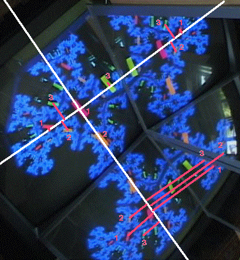
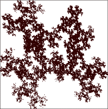

|  |
| To find IFS rules to generate this image, start with three points on the monitor, find their images
on the monitor, on each mirror, and on the image of each mirror in the other. These last two, the
image of the side mirror in the bottom mirror and the image of the bottom mirror in the side mirror,
together form a single image of the shape. |
| That the images q1, q2, and q3 of three non-collinear
points p1, p2, and p3 determine a unique affine transformation
is not difficult to see. Here are some practice problems. We call
p1, p2, and p3 the source points and
q1, q2, and q3 the target points. |
| We select coordinates to simplify the computations. Take the source point p1 to be the
origin and p2 lying along the x-axis. |
| Using a cm scale we measure these values |
| p1 = (0,0), p2 = (2.2,0), and p3 = (-.2,2.2) |
| For the target points on the monitor we measure |
| q1 = (-.9,-.7),
q2 = (-.2,.4), and
q3 = (-1.9,.3) |
| From this data the affine transformation calculator finds |
| r | s | theta |
phi | e | f |
| .58 | .65 | 45 |
35 | -.2 | -2.2 |
|
|
| For the target points on the right mirror we measure |
| q1 = (-.3,7.6),
q2 = (.5,6.7), and
q3 = (-1.1,7.1) |
| From this data the affine transformation calculator finds |
| r | s | theta |
phi | e | f |
| -.55 | .42 | 132 |
129 | -.3 | 7.6 |
|
|
| For the target points on the bottom mirror we measure |
| q1 = (7.9,-2),
q2 = (7,-1.3), and
q3 = (8.4,-1.2) |
| From this data the affine transformation calculator finds |
| r | s | theta |
phi | e | f |
| -.52 | .44 | -38 |
-26 | 7.9 | -2 |
|
|
| For the target points on the lower right image we measure |
| q1 = (7.5,4.7),
q2 = (7.1,5.5), and
q3 = (6.9,4.3) |
| From this data the affine transformation calculator finds |
| r | s | theta |
phi | e | f |
| .41 | .33 | 117 |
117 | 7.5 | 4.7 |
|
| |
| Combining these we have these IFS rules and this picture. Here is the
videofeedback image
for comparison. |
| r | s | theta |
phi | e | f |
| .58 | .65 | 45 |
35 | -.2 | -2.2 |
| -.52 | .44 | -38 |
-26 | 7.9 | -2 |
| -.55 | .42 | 132 |
129 | -.3 | 7.6 |
| .41 | .33 | 117 |
117 | 7.5 | 4.7 |
|
 |
|
|
|
|
|
|
|